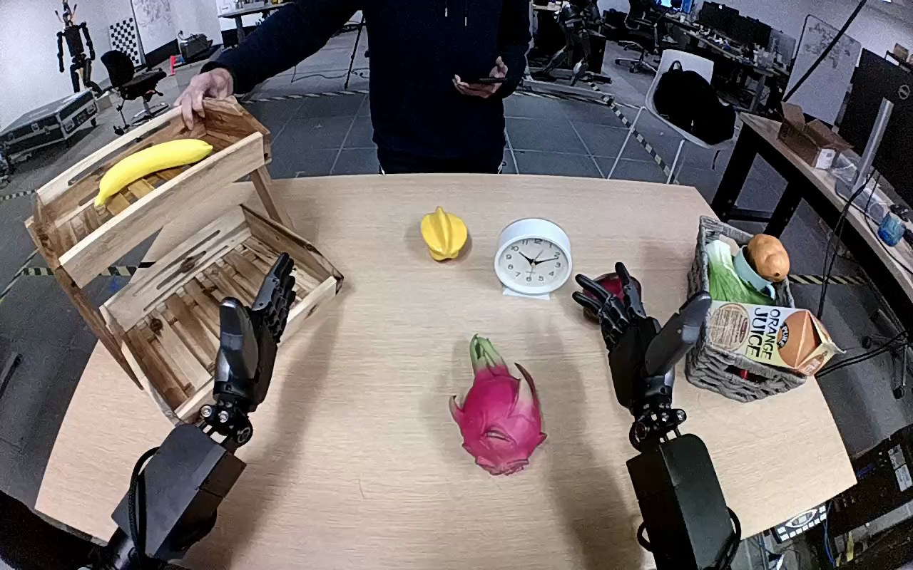

NVIDIA GR1 · 59
Video 59

Visual review action_review.json
{
"prompt_protocol": "humanoid_action_v1",
"prompt_provenance": "visually_authored_from_video_and_initial_frame",
"reviewed_contact_sheets": [
"sheet_001.jpg"
],
"inspected_frame_stride": 2,
"inspected_sampled_frame_count": 60,
"initial_scene": "Forward-looking view between the robot forearms over a tan table. A white analog clock stands centrally, to the right of a two-tier wooden rack whose upper tray contains a banana. A person faces the robot across the table; the right robot hand is open near an apple and basket.",
"observed_sequence": [
{
"source_frame_interval": [
0,
25
],
"action": "Person initially steadies the upper shelf, then slides/repositions the white clock toward the robot left side and adjusts the small yellow object away from the approach. Robot hands remain open.",
"confidence": "high"
},
{
"source_frame_interval": [
26,
59
],
"action": "Robot left arm advances toward the white clock with fingers open, moving past the yellow object; right hand remains open near the apple/basket.",
"confidence": "high"
},
{
"source_frame_interval": [
60,
77
],
"action": "Left hand lowers around the white clock casing and closes its fingers; the person briefly reaches near the approach at about frame 64, then removes their hand without a hand-to-hand transfer.",
"confidence": "high"
},
{
"source_frame_interval": [
78,
101
],
"action": "Left hand lifts the clock fully off the tabletop and transports it upward and leftward toward the upper wooden tray; the clock hangs upright, face toward the camera.",
"confidence": "high"
},
{
"source_frame_interval": [
102,
115
],
"action": "Left hand lowers the clock into the upper shelf tray beside the banana. The lower clock is partly hidden behind the tray front rim.",
"confidence": "high"
},
{
"source_frame_interval": [
116,
119
],
"action": "Left hand begins opening the broad opposing digit away from the clock face while remaining immediately above the clock. Clock remains upright within the upper tray; no hand withdrawal or independently settled state is shown.",
"confidence": "high"
}
],
"arm_hand_roles": {
"left": "Sole manipulator: reaches, encloses clock casing, lifts and carries clock to upper shelf tray, lowers it and begins opening fingers.",
"right": "Open beside the apple/basket throughout; minor posture movement, no grasp, support, or transfer.",
"coordination": "Single-handed transport and placement. Person repositions clock before robot grasps it; no hand-to-hand object transfer or two-hand robot coordination."
},
"anatomical_side_evidence": {
"basis": "The camera looks forward between paired forearms originating below the frame, giving a robot-facing-forward view rather than an external view facing the robot. The active arm extends from the lower-left side and the inactive arm from lower-right; continuous forearm/hand geometry and bilateral arrangement establish robot-relative left/right in this view, consistent with the original left-hand instruction.",
"confidence": "high",
"limitation": "Shoulders and torso are outside the frame; identification rests on the forward egocentric arrangement of the visible paired forearms, not an image-side convention for third-person footage."
},
"terminal_state": "White clock upright inside upper wooden tray beside banana, partly behind front rim. Left hand stays over it and has begun opening its opposing digit; right hand remains open near basket. Final independent stability and complete loss of all hand contact are not directly visible.",
"uncertainties": [
"Tray rim and left hand hide the exact clock base contact and rear finger contact. Opening is visible, but complete release and stable unsupported placement after withdrawal cannot be verified before the ending."
],
"annotation_discrepancies": [],
"annotation_verification": "Original instruction correctly identifies left hand, white clock, table origin and upper wooden shelf destination. Visual evidence adds prior person repositioning and limits the terminal claim to lowering into the tray and beginning to open the hand.",
"evidence_frame_indices": [
0,
16,
64,
76,
90,
104,
112,
116,
118,
119
],
"selected_execution_status": "uncertain",
"execution_status_reason": "Transport to and lowering into the intended upper tray are visible; full release/independent final stability are occluded and no withdrawal is shown.",
"inspection_coverage": "All 60 every-second-frame samples across frames 0–118 visually inspected on sheet_001.jpg; native source initial PNG and nine native detail frames inspected, including final frame 119.",
"video_id": "59",
"dataset": "NVIDIA_GR1_100",
"dedicated_review_agent": "review_gr1_59",
"review_source_video": "NVIDIA_GR1_100/59/original/original.mp4",
"source_frame_count": 120,
"source_fps": 20.0,
"native_detail_frames": [
16,
64,
76,
90,
104,
112,
116,
118,
119
],
"world_model_prompt": "After a person slides the white clock closer, the robot grasps its casing with its left hand and lifts it from the table. The left hand carries the clock to the wooden shelf and lowers it upright into the upper tray beside the banana, then begins opening its fingers while remaining over the clock. Keep the camera fixed; preserve robot geometry, physically valid joint motion, and normal gripper opening and closing.",
"original_task_instruction": "Use the left hand to pick up white clock from middle of tan table to top of the wooden shelf.",
"selected_segment": {
"start_frame": 0,
"end_frame_exclusive": 120,
"reason": "Complete original single-task reference; no cropping or trimming requested."
},
"source_video_sha256": "b0866a1d56bf9a9263c3733aae2e2a34d9b0f0bf00b8fc4d36ecb7c29d01b064",
"review_completed_at": "2026-10-13T18:20:52.531771+00:00"
}